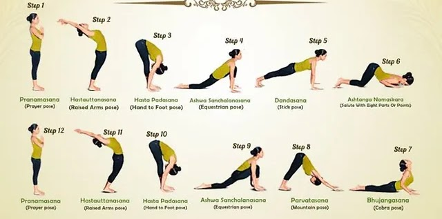

YOGA & WELLNESS
Ancient Practice,
Modern Transformation
Our therapeutic yoga programs go beyond stretching. Each sequence is tailored to your constitution — activating the body's innate healing intelligence.
06:00 AM
Surya Namaskar & Pranayama
Energise the body with solar salutations and breath work.
08:00 AM
Therapeutic Asana
Targeted postures for your specific condition and dosha.
05:00 PM
Yin Yoga & Meditation
Slow, restorative practice to release deep fascial tension.
09:00 PM
Yoga Nidra
Guided sleep meditation for cellular regeneration.

Surya Namaskar

Pranayama

Water Meditation